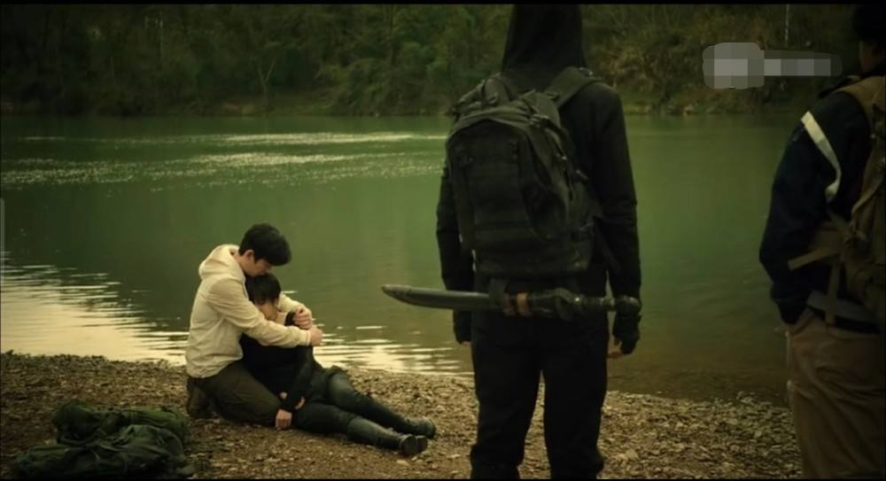

内容简介
从云顶天宫顺利脱出之后，吴邪和苏醒后的三叔进行了一次长谈。吴邪了解到在二十年前海底古墓里发生的三叔没有透露的隐情。关于解连环的神秘死亡以及背后牵涉到战国帛书和老长沙的恩怨，也理出了端倪。就在吴邪认为事情接近真相的时候，两盘来自张起灵的录像带，又让事情重新进入了重重迷雾之中……
寻着录像带中支离破碎的线索，吴邪只身一人来到了陌生的青海格尔木。在一座废弃的疗养院里，吴邪发现了考古队留下的大量笔记和资料，其中最关键的，是陈文锦亲笔写下的工作日志。这些记录揭示了一个令人毛骨悚然的真相——当年的考古队在海底墓中发现了西王母长生不老的秘密，而这个秘密的代价，远比任何人想象的都要可怕。
顺着前人留下的线索，吴邪发现了考古队最后的去向。为了了解事情的真相，吴邪混入了阿宁前往柴达木盐沼的探险队，同时三叔的队伍也神秘地从敦煌出发，两支队伍似乎有着相同的目标……而等待他们的，是一座在戈壁大雨中才会出现的古老鬼城，以及城中沉睡了千年的秘密。
这是一个谜一样的故事：戈壁大雨中才会出现的古老鬼城到底是谁的城池？海底墓穴中诡异的古尸是不是汪藏海？战国帛书上毫无意义的天数和鬼图到底有着什么含义？废弃疗养院地下室里来历不明的巨大石棺里装的是谁？录像带中诡异的行为有着什么不为人知的含义？西沙考古队那从来没有人提起的第十一人到底是谁？这一连串的疑问，将吴邪引向了蛇沼鬼城——那个隐藏在柴达木盐沼深处的远古禁地。
人物介绍
吴邪、张起灵、王胖子、吴三省、阿宁、陈文锦、霍玲、黑瞎子、小花、刘丧、潘子
剧情分析
地点与背景
蛇沼鬼城位于青海柴达木盐沼深处，是西王母国的遗址。这里是整个《盗墓笔记》系列中最神秘、最危险的地点之一。鬼城只有在戈壁下大雨的时候才会出现，平时则隐藏在盐沼之下，仿佛从来不曾存在过。城内遍布毒蛇，尤其是那种体型巨大的鸡冠蛇，其毒性之强，连经验丰富的盗墓者都闻之色变。整个鬼城笼罩在一种诡异的氛围中，仿佛西王母的意志仍在守护着这座千年古城。
西王母，传说中掌握着长生不老之术的远古女王。她的墓穴就在鬼城的核心地带，而所谓的"长生"并非世人想象的那种美好——代价是变成禁婆，一种丧失人性、只剩本能的怪物。陈文锦和霍玲当年就是在追寻这个秘密时，一步步走向了不可挽回的深渊。
剧情（上）
从云顶天宫顺利脱出之后，吴邪和苏醒后的三叔进行了一次长谈。吴邪了解到在二十年前海底古墓里发生的三叔没有透露的隐情。关于解连环的神秘死亡以及背后牵涉到战国帛书和老长沙的恩怨，也理出了端倪。就在吴邪认为事情接近真相的时候，两盘来自张起灵的录像带，又让事情重新进入了重重迷雾之中……
吴邪独自来到格尔木，在废弃疗养院的地下室里发现了陈文锦留下的笔记。这些笔记记录了考古队当年在海底墓的发现——西王母长生的秘密。笔记中提到，考古队的第十一人身份成谜，而陈文锦似乎早已预感到了什么不祥之事。更令吴邪震惊的是，他在疗养院里还发现了一具巨大的石棺，棺中的尸体形态诡异，显然是经历了某种可怕的变化。
就在吴邪研究这些线索时，一个神秘女子霍玲出现了。曾经的考古队员霍玲，如今已经变成了一个半人半鬼的存在——她就是传说中的禁婆！霍玲虽然还保留着部分记忆和理智，但她的身体已经开始不可逆转地异化。她告诉吴邪，当年考古队在海底墓发现长生秘密后，陈文锦和她都吃了西王母的尸蹩丹药。离开蛇沼鬼城后，身体开始发生可怕的变化——先是变得衰老，然后逐渐失去人性，最终会变成彻底的禁婆。只有回到蛇沼鬼城，待在陨玉附近，才能延缓这种变化。
剧情（中）
吴邪混入阿宁的探险队前往柴达木盐沼。一路上，毒蛇不断袭击队伍，多名队员惨死。阿宁虽然精明能干，但在蛇沼鬼城面前，人类的智慧和装备都显得苍白无力。最终，阿宁被凤尾鸡冠蛇咬中，毒发身亡——这个在西沙就与吴邪结下恩怨的女人，就这样永远留在了蛇沼鬼城。她的死对吴邪打击很大，也让吴邪第一次真正感受到，自己已经不再是那个天真的小三爷了。
与此同时，吴三省带着自己的队伍也赶到了蛇沼鬼城。他在城中见到了陈文锦一行人，也知道了陈文锦他们消失的秘密——当年考古队发现长生秘密后，陈文锦、霍玲等人为了追求长生，吃了西王母的尸蹩丹药。离开鬼城后，身体开始发生变化，霍玲变成了禁婆，其他人吓得赶紧赶回蛇沼鬼城。只要待在鬼城内，就不会完全变成禁婆，但代价是永远不能离开。
陈文锦一行人留在陨玉中沉睡，陨玉分泌的物质可以抵消尸蹩丹药的毒性，但人进入陨玉后会一直沉睡，想要真正长生要等到两千年之后。这就是西王母长生的真相——不是永葆青春，而是用沉睡换取时间，等两千年一轮回结束后，才能真正醒来。这代价，未免也太大了……
剧情（下）
故事的高潮，是张起灵和陈文锦进入陨石洞穴的那一刻。张起灵，这个身世成谜的男人，在蛇沼鬼城找到了关于自己身世的线索。陈文锦告诉他，要想知道真相，就必须进入陨石上的洞穴。两人一同进入，但最终只有张起灵一个人出来了。
张起灵再次失忆，忘记了洞中发生了什么，也忘记了陈文锦的下落。这种反复的失忆，似乎与他的体质和陨石的某种力量有关。每当他接近真相时，记忆就会被抹去，仿佛有什么力量在刻意阻止他想起过去。每当看到这里，都让人忍不住想——张起灵到底在洞中看到了什么？陈文锦是否还活着？那个洞穴通往的，真的是另一个世界吗？
为了安全起见，众人只能先离开蛇沼鬼城，再做打算。但离开并不意味着结束——蛇沼鬼城的秘密才刚刚揭开一角，更多未解之谜，将在后续的故事中缓缓展开。
解析
蛇沼鬼城是《盗墓笔记》中承上启下的关键篇章。它不仅揭示了西王母长生之术的真相，更将整个故事从单纯的盗墓冒险，提升到了对人性、欲望和牺牲的深层思考。
阿宁的死是一个重要的转折点。从七星鲁王宫到蛇沼鬼城，阿宁一直是吴邪的对手和同行者。她的死不仅让吴邪失去了一个"亦敌亦友"的伙伴，更让吴邪第一次直面死亡的残酷。从这一刻起，吴邪开始失去天真，开始明白——在这个世界上，不是所有问题都有答案，不是所有牺牲都有意义。
霍玲变成禁婆的设定，是对"长生"主题的深刻反思。当年考古队追寻长生，结果却发现长生的代价是变成怪物。这何尝不是对人性贪婪的讽刺——为了永生，人们愿意付出一切代价，却忘了"活着"本身的意义。霍玲的悲剧，正是这种贪婪的代价。
张起灵的反复失忆，则暗示着他身世的复杂性。每当他接近真相时，记忆就会被抹去，这究竟是一种保护，还是一种惩罚？或许，有些真相太过沉重，连他自己都无法承受。
分析
阿宁被凤尾鸡冠蛇咬死，从此阿宁正式下线，吴邪也将失去天真。她的死是全书最令人心痛的时刻之一——不是因为她有多么善良，而是因为她代表了那个时代的结束。从此以后，吴邪再也不是那个可以躲在别人身后的小三爷了。
陈文锦进入陨玉沉睡，霍玲变成禁婆，这两个女人的命运，是蛇沼鬼城最令人唏嘘的部分。她们都是才华横溢的考古学家，却被长生的执念所困，最终沦为了自己追寻之物的囚徒。这或许就是南派三叔想要告诉我们的——有些秘密，知道了比不知道更痛苦。
张起灵在陨石洞中失忆，是他身世之谜的又一次加深。这个男人背负了太多秘密，却一次又一次地被剥夺记忆，仿佛命运在跟他开一个永远无法醒来的玩笑。但即便如此，他依然选择前行，依然选择保护身边的人。这就是小哥——沉默、孤独，却无比坚定。
蛇沼鬼城的故事，让吴邪从一个天真烂漫的少年，变成了一个背负沉重秘密的男人。从此，他踏上了一条更加艰难的道路——寻找真相，寻找答案，寻找那个永远在远方的"终极"。这条路，注定孤独，但吴邪从未放弃。
